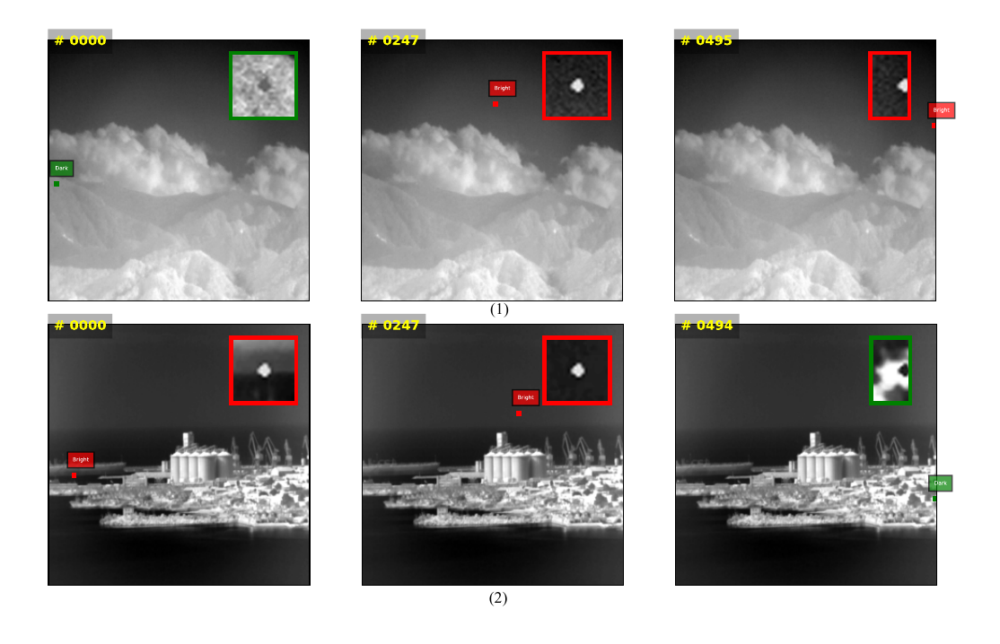
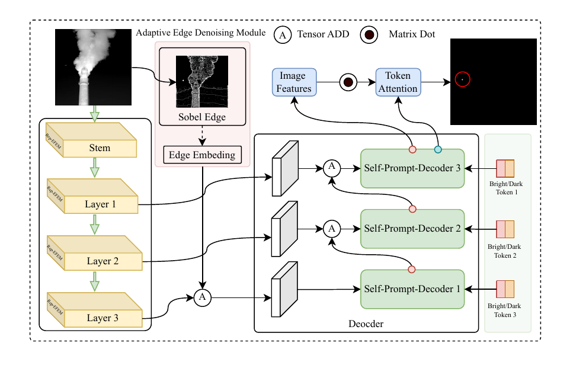
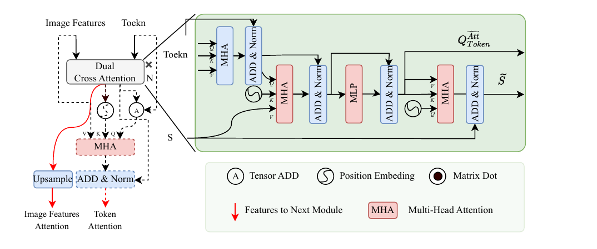
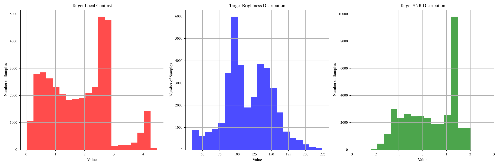
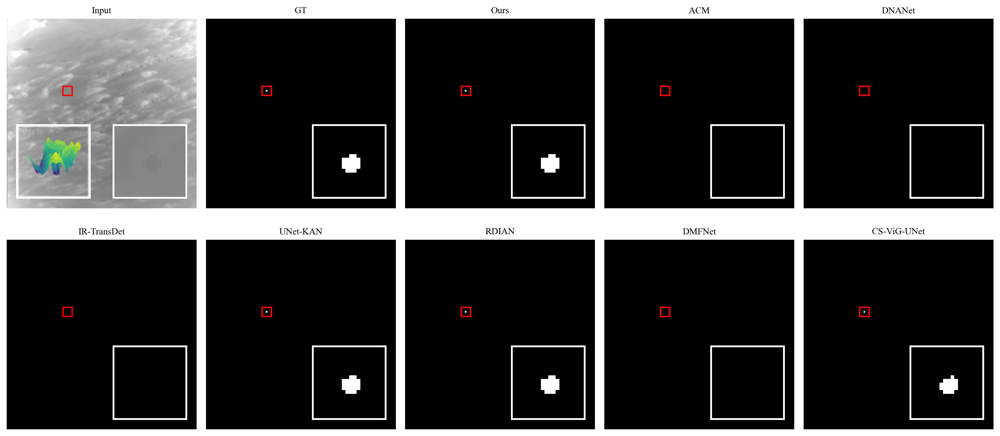
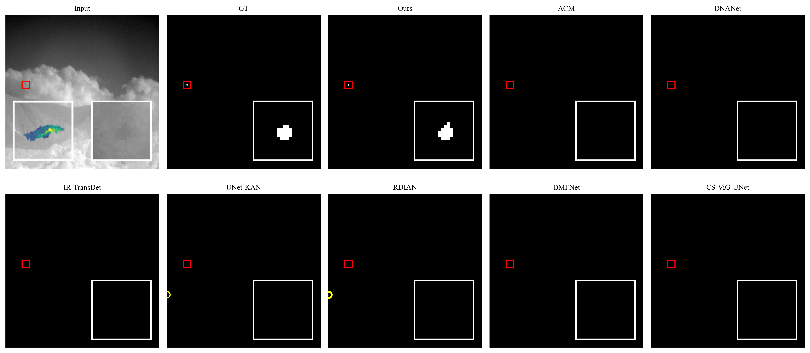
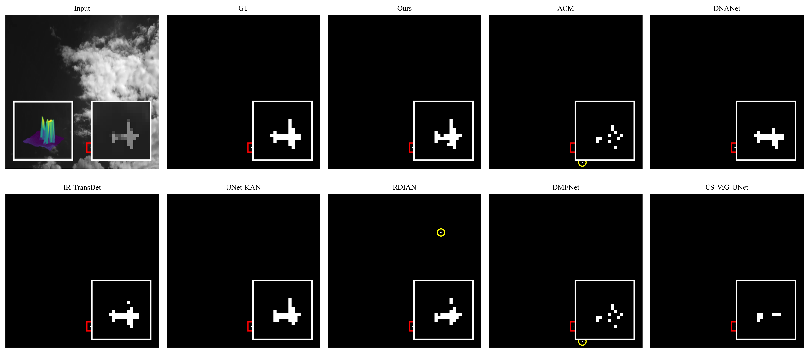
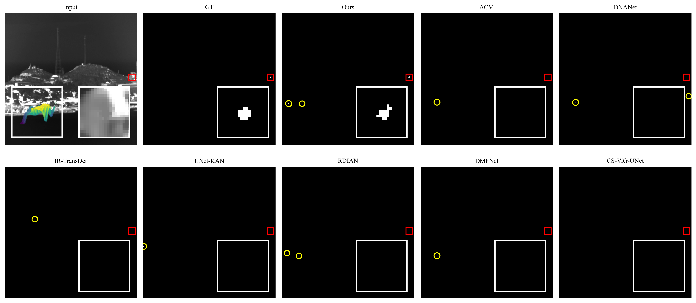
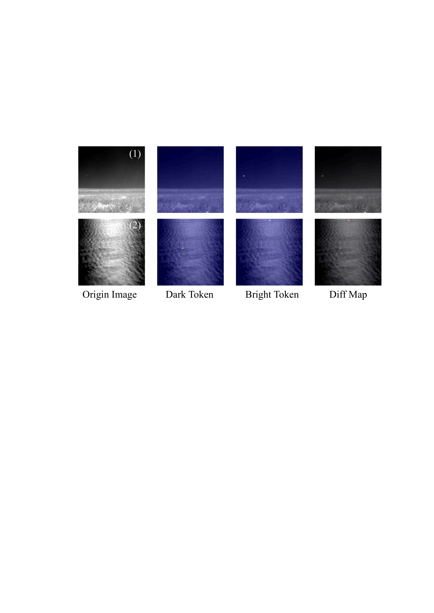
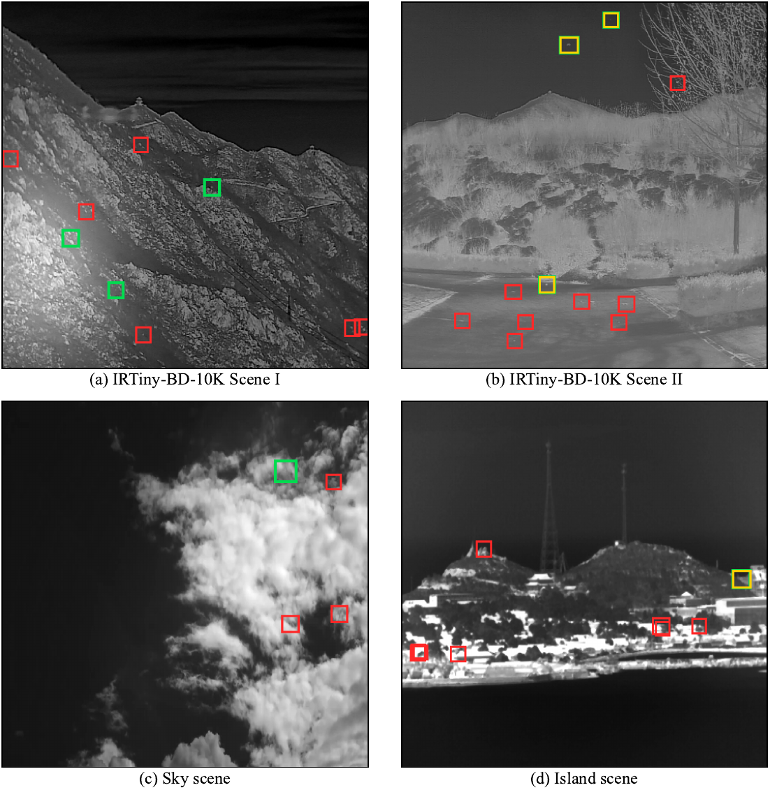

Rep-EFEM encoder
Extracts multi-scale infrared features and supports deploy-time re-parameterization for efficient inference.
Pattern Recognition · Manuscript under review

SPD addresses bright-dark infrared small target detection by explicitly decoupling target polarity during segmentation. The framework combines a re-parameterized feature encoder, adaptive edge denoising/enhancement, and a self-prompt decoder with learnable bright and dark tokens, enabling robust detection under low signal-to-clutter ratios, clutter interference, and polarity reversal.

Extracts multi-scale infrared features and supports deploy-time re-parameterization for efficient inference.
Uses adaptive edge denoising/enhancement to retain weak target boundaries while suppressing clutter responses.
Introduces bright and dark prompt tokens to separate opposite target appearances during mask decoding.

| Dataset | Split size | pixAcc | mIoU | PD | FA_raw |
|---|---|---|---|---|---|
| IRReversal | 17,915 | 0.911425 | 0.851500 | 0.964890 | 4.281660e-06 |
| IRTiny-BD-10K | 2,000 | 0.939007 | 0.889078 | 0.957138 | 5.760193e-07 |
The paper analyzes polarity distribution, target scale, scene clutter, and representative failure modes to explain where bright-dark infrared small target detection remains challenging.







The repository provides training, evaluation, inference, multi-seed, complexity, and visualization scripts. IRReversal can be requested from the authors, and public benchmarks follow their original distribution channels.
pip install -r requirements.txt
python train.py --config configs/spd_irtiny_bd_10k.yaml
python test.py --config configs/spd_irtiny_bd_10k.yaml --checkpoint work_dirs/spd_irtiny_bd_10k/best.pth --save-pred@article{spd2026,
title = {Decoupling Polarity with Self-Prompts: A New Framework for Bright-Dark Infrared Small Target Detection},
author = {Lin, Jian and Li, Shaoyi and Yang, Xi and Niu, Saisai and Yue, Xiaokui},
journal = {Pattern Recognition},
year = {2026},
note = {Manuscript under review}
}